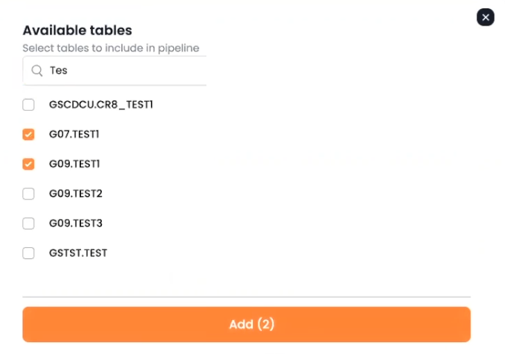
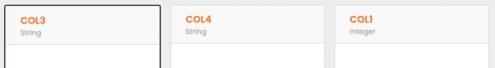

Data Pipelines allow a convenient, no-code method to pipe data from the System of Record to the GigaSpaces in-memory data grid.
A new data pipeline definition will include the definitions of the System of Record databases, tables and fields that will provide data to the pipeline. The definition also indicates the in-memory
Additional information includes optional validation rules and automatic conversion of specified field definitions.
From the Data Pipeline Status screen, press New + to begin the pipeline definition process.
The Pipeline Configuration screen appears as follows:

Load Configuration – fill in all of the pipeline configuration items (shown below) from a
Pipeline Name – xxxxxxxx 010
Space Name – xxxxxxxx 020
Connector Type – xxxxxxxx 030
Connector Setting:
Data Source Connection – xxxxxxxx 040
CDC Kafka Topic – xxxxxxxx 050
SYNC Kafka Topic – xxxxxxxx 060
Advanced Setting:
Batch Write – xxxxxxxx 070
Checkpoint Interval – xxxxxxxx 080
Press Create Pipeline to create the new data pipeline.
You may then press Select Tables to choose which tables to include in the pipeline. Press Add to add the selected tables to the pipeline.

You can click Edit to make changes to the pipeline.
Initially, the Parameters tab will display.
The Parameters tab contains the following fields and options:
Pipeline Name – xxxxxxxx 090
Structural Mismatch:
Extra Columns – xxxxxxxx 100
Missing Columns – xxxxxxxx 110
Type Mismatch – xxxxxxxx 120
Add ID and Routing ID – xxxxxxxx 130
Error tolerance:
Maximum rejected records per minute – xxxxxxxx 140
Preliminary Loading:
CDC load – xxxxxxxx 150
Error Columns – xxxxxxxx 160
Missing Columns – xxxxxxxx 170
Indexes:
Extra Column – xxxxxxxx 180
Type Mismatch – xxxxxxxx 190
Tiered Storage:
Data age – xxxxxxxx 200
Logical Condition – xxxxxxxx 210
Initiate space re-deployment – xxxxxxxx 220
The Fields tab appears as follows.
.
The Fields tab contains the following fields and options:
Field ID – xxxxxxxx 230
Field (column) names – xxxxxxxx 240
This part of the screen shows the list of fields in the pipeline. In this example, the fields are named COL3, COL 1 etc:

If you click on one of the field names, the Pipeline Fields section appears, which allows you to to edit the field characteristics:
Name – xxxxxxxx 250
Type – xxxxxxxx 260
Validation – xxxxxxxx 270
Can be empty? – xxxxxxxx 280
On invalid value – xxxxxxxx 290
After you have added the tables and saved the pipeline, save the changes and press Start to start the pipeline.
The pipeline will show as Started in the Data Pipeline Status screen: